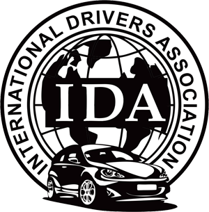

01
СпецЦОН, ул. Ак-Кайнар, 1, 2 этаж
+7 777 115 30 00
Official IDP services / Kazakhstan

Департамент выдачи МВУ в Казахстане
International Drivers Association
Практическая инфраструктура для международных водителей
ТОО «International Drivers Association» — единственная сертифицированная IFA организация. Согласно сертификату № 2012-23779-001, IDA уполномочена оформлять и выдавать международные водительские удостоверения на территории стран Евразии и региона MENA. Сертификат выдан 23 апреля 2012 года и переоформлен 23 октября 2023 года. Иных сертификатов IFA не выдавала.
Сертификационное направление IFA охватывает международные водительские документы на основе Венской конвенции 1968 года и Женевской конвенции 1949 года. Указанная в сертификате IFA территория оформления и выдачи МВУ организацией IDA — страны Евразии и регион MENA.
Головной офис · Алматы
ул. Тулебаева, 95/1, 1 этаж — вход со стороны ул. Толе би
Официальные филиалы IDA
Четыре центра обслуживания в ключевых городах Казахстана.
02
СпецЦОН, ул. С. Муканова, 2, 1 этаж
+7 700 115 30 01
Астана
03
СпецЦОН, мкр. Достык, 2343/1, 1 этаж
+7 700 115 30 00
Шымкент
04
СпецЦОН, Северная промышленная зона, 69, 1 этаж
+7 707 115 30 03
Атырау
Международная сервисная сеть
Обслуживание заявителей в ОАЭ
За пределами Казахстана документы IDA выдаются через официальных партнёров. В ОАЭ официальным партнёром IDA является IFA International Auto-Tourism Service L.L.C-FZ, лицензия № 2312365.01, Дубай. Партнёр принимает заявки и оплату, организует печать и передаёт документы заявителям.
Официальный партнёр IDA в ОАЭОсторожно, подделки
IFA подтверждает только сертификат № 2012-23779-001, выданный International Drivers Association. Сертификаты с иными номерами и ссылки на «Federation of International Autotourism» или похожие наименования к IFA отношения не имеют. Для проверки обратитесь в дирекцию Федерации.
directorate@ifa.org.kzInternational driver services